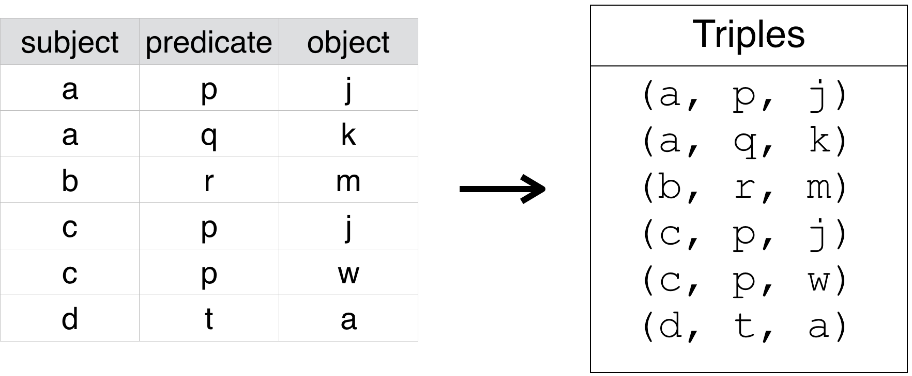
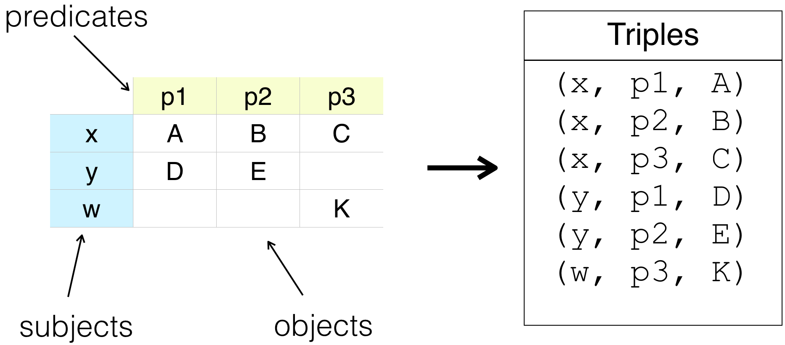

Semantic Web Basics
Core Concepts and Mechanisms¶
This section provides basic background on semantic concepts as they pertain to a semantic application like the ORR, and introduces related terminology used in both the ORR software and this documentation.1
The Semantic Web is about capturing information, using standards-based formal knowledge representation structures and mechanisms, to make such information processable by machines, thus facilitating its sharing and reuse across disparate systems and applications.2
The Resource Description Framework (RDF)3 is one of the fundamental Semantic Web specifications. Anything can be a resource, including physical things, documents, abstract concepts, web pages, numbers, and strings.
In RDF, the basic element of knowledge representation is the triple, which establishes a concrete connection between specific resources, and has the form:
<subject> <predicate> <object>
Resources can be denoted to by IRIs4 and literals. IRIs are used to identify resources and to link to them. Literals denote values according to known datatypes (e.g., numbers, strings, and dates).
Generally speaking, an ontology or vocabulary is a given set of RDF triples. The complexity of a given ontology or vocabulary largely depends on the agreed-upon semantics associated with the triples in the set (and in particular, to their predicates). In fact, a number of standard vocabularies have been developed to attach well-defined semantics at various levels of sophistication.
Among the standard vocabularies, and the terms they define, are:
- The Resource Description Framework (RDF)3 itself:
- type, Property, Statement, subject, predicate, object
- RDF Schema (RDFS)5:
- Resource, Class, subClassOf, subPropertyOf, comment, label, seeAlso, isDefinedBy
- Simple Knowledge Organization System (SKOS)6:
- definition, note, exactMatch, closeMatch, relatedMatch
- Web Ontology Language (OWL)7:
- Ontology, inverseOf, ReflexiveProperty, sameAs, versionInfo
- Dublin Core Terms (DCT)8:
- title, description, creator, contributor, rights, license
- Ontology Metadata Vocabulary (OMV):9
- name, description, hasCreator, keywords
Capturing RDF triples¶
The ORR is not intended as a full-fledged ontology editor. However, it includes two integrated tools to facilitate the definition of ontologies by defining the triples at the RDF level. This ORR functionality is described in more detail in later sections. Below are the key conceptual models underlying those tools.
Direct triple table¶
A direct way to capture the set of triples comprising a given ontology is via a subject-predicate-object table:

The ORR mapping tool uses such a mechanism, wherein the set of predicates are taken from the SKOS vocabulary, and the sets of subjects and objects are selected by the user from given mapped ontologies.
Another triple table arrangement¶
Another table arrangement to capture RDF triples is illustrated as follows:

The column headers capture the desired predicates, the row headers capture the subjects, and the cell entries capture the objects.
The ORR vocabulary tool uses this mechanism.
-
Some of the materials in this section adapted from the presentation, Semantic Web: Core Concepts and Mechanisms and the MMI Ontology Registry and Repository. C. Rueda. ESIP 2016 Summer Meeting. July 19, 2016. ↩
-
W3C Semantic Web Activity Statement - https://www.w3.org/2001/sw/Activity ↩
-
W3C RDF Primer - https://www.w3.org/TR/2002/WD-rdf-primer-20020319/ ↩↩
-
IRI: Internationalized Resource Identifier - https://en.wikipedia.org/wiki/Internationalized_Resource_Identifier ↩
-
RDF Schema - https://www.w3.org/TR/rdf-schema/ ↩
-
Simple Knowledge Organization System (SKOS) Primer - https://www.w3.org/TR/2009/NOTE-skos-primer-20090818/ ↩
-
Web Ontology Language (OWL) Primer - https://www.w3.org/TR/owl2-primer/ ↩
-
Dublin Core Terms (DCT) - http://dublincore.org/documents/dcmi-terms/ ↩
-
Ontology Metadata Vocabulary (OMV) for the Semantic Web http://ontolog.cim3.net/file/resource/OOR/OMV/OMV-Reportv2.4.1.pdf ↩